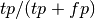
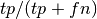

sklearn.metrics.precision_recall_fscore_support¶
- sklearn.metrics.precision_recall_fscore_support(y_true, y_pred, beta=1.0, labels=None, pos_label=1, average=None)¶
Compute precisions, recalls, f-measures and support for each class
The precision is the ratio  where tp is the number of true positives and fp the number of false positives. The precision is intuitively the ability of the classifier not to label as positive a sample that is negative.
The recall is the ratio  where tp is the number of true positives and fn the number of false negatives. The recall is intuitively the ability of the classifier to find all the positive samples.
The F_beta score can be interpreted as a weighted harmonic mean of the precision and recall, where an F_beta score reaches its best value at 1 and worst score at 0.
The F_beta score weights recall beta as much as precision. beta = 1.0 means recall and precsion are equally important.
The support is the number of occurrences of each class in y_true.
If pos_label is None, this function returns the average precision, recall and f-measure if average is one of ‘micro’, ‘macro’, ‘weighted’.
Parameters : y_true : array, shape = [n_samples]
True targets
y_pred : array, shape = [n_samples]
Predicted targets
beta : float, 1.0 by default
The strength of recall versus precision in the f-score.
labels : array
Integer array of labels
pos_label : int
In the binary classification case, give the label of the positive class (default is 1). Everything else but ‘pos_label’ is considered to belong to the negative class. Set to None in the case of multiclass classification.
average : string, [None, ‘micro’, ‘macro’, ‘weighted’(default)]
In the multiclass classification case, this determines the type of averaging performed on the data.
- macro:
Average over classes (does not take imbalance into account).
- micro:
Average over instances (takes imbalance into account). This implies that precision == recall == f1
- weighted:
Average weighted by support (takes imbalance into account). Can result in f1 score that is not between precision and recall.
Returns : precision: array, shape = [n_unique_labels], dtype = np.double :
recall: array, shape = [n_unique_labels], dtype = np.double :
f1_score: array, shape = [n_unique_labels], dtype = np.double :
support: array, shape = [n_unique_labels], dtype = np.long :
References